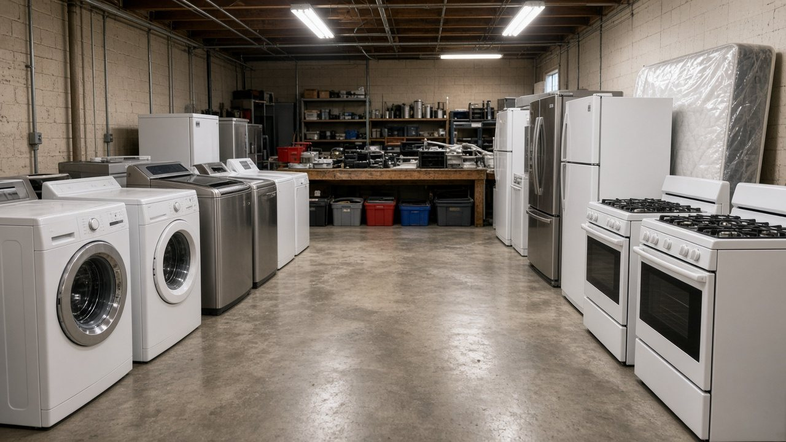

A small family owned appliance store: refurbished washers, dryers, stoves and refrigerators, appliance repair in-home or in-store, new and used parts, and new mattresses.
FOR YOUR BEST DEAL ON A USED APPLIANCE...PLUS!!
Sample photoService calls for most major laundry and kitchen appliances.
Bring it to the shop for repair.
New and used appliance parts.
Appliance Plus works with rental property owners and property management companies.
“We are a small family owned appliance store in Waco … We would love to help our neighbors with their appliance needs.”BRIAN AND JILL CASTILLO, NEXTDOOR “OUR STORY”
“Great place to get quality used appliances..friendly staff and they will gladly deliver”A-BETTER-PLACE · 2018
“I bought a washer here about a year and a half ago and it has been a great one! 3 weeks ago I had to replace my dryer and they fixed me up with a great one! Thanks guys!”A-BETTER-PLACE · 2017
“I was very impressed that they already had the sale and we're willing to go above and beyond what I had already paid for. I definitely would recommend their store.”A-BETTER-PLACE · 2017
4.2 on Google (38 reviews) · 12 Nextdoor recommendations
Please confirm the address: it comes from directories, and the Nextdoor page shows no street address.
Please confirm which hours are current.